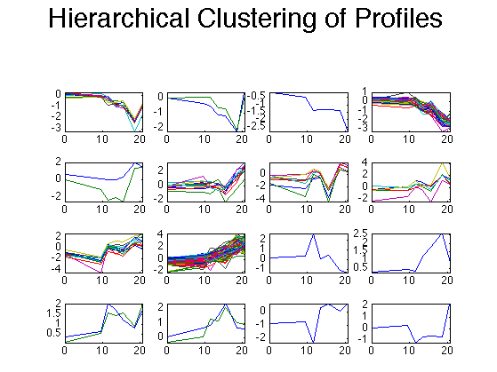
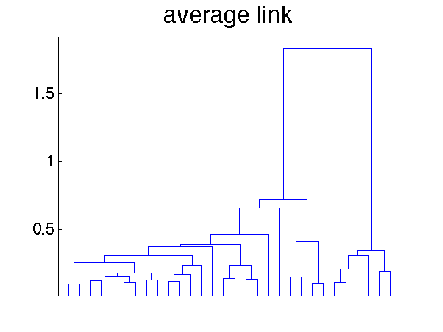
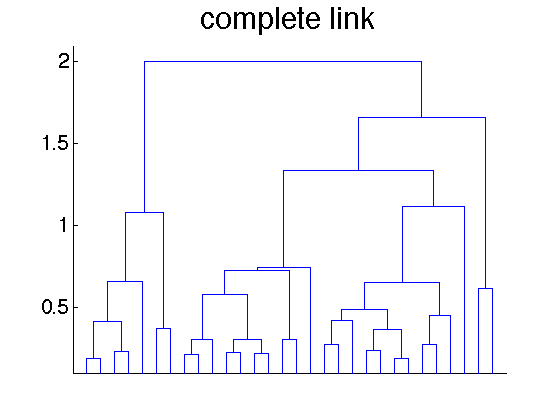
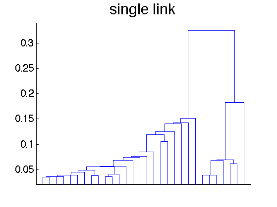

Hierarchical Clustering Demo
requireStatsToolbox
loadData('yeastData310')
corrDist = pdist(X, 'corr');
clusterTree = linkage(corrDist, 'average');
clusters = cluster(clusterTree, 'maxclust', 16);
figure(1);clf
for c = 1:16
subplot(4,4,c);
plot(times,X((clusters == c),:)');
set(gca, 'fontsize', 12);
axis tight
end
suptitle('Hierarchical Clustering of Profiles', 30);
printPmtkFigure('clusterYeastHier16')
if 0
figure(5);clf
clustergram(X(:,2:end),'RowLabels',genes, 'ColumnLabels',times(2:end))
title('hierarchical clustering', 'fontsize', 30)
set(gca, 'fontsize', 20);
printPmtkFigure('clusterYeastRowPerm')
end
figure(6); clf
dendrogram(linkage(corrDist, 'average'));
title('average link', 'fontsize', 30)
set(gca,'xticklabel','')
set(gca, 'fontsize', 20);
printPmtkFigure('clusterYeastAvgLink')
figure(7); clf
dendrogram(linkage(corrDist, 'complete'))
title('complete link', 'fontsize', 30)
set(gca,'xticklabel','')
set(gca, 'fontsize', 20);
printPmtkFigure('clusterYeastCompleteLink')
figure(8); clf
dendrogram(linkage(corrDist, 'single'))
title('single link', 'fontsize', 30)
set(gca,'xticklabel','')
set(gca, 'fontsize', 20);
printPmtkFigure('clusterYeastSingleLink')
   